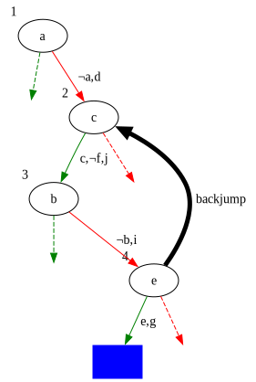

SATisfying Solutions to Difficult Problems!
This post covers the same material as my !!Con 2024 talk.
What are SAT solvers, and how are they useful? Let’s start by briefly touching on NP-complete problems!
NP-complete problems
NP-complete problems are decision problems, i.e. the solution to them is “yes” or “no”. When these solutions exist, they can be verified in polynomial time, but we don’t know how to find solutions in polynomial time, or even if this is possible at all (this is the P versus NP problem). An important characteristic of NP-complete problems is that any NP-complete problem can be reduced to any other NP-complete problem. Examples of NP-complete problems include:
- Knapsack problem
- Travelling salesman problem
- Subset sum problem
- Graph colouring problem
- Sudoku
- Boolean satisfiability problem
We’re specifically interested in the boolean satisfiability problem.
Boolean satisfiability problem
One definition of the boolean satisfiability problem is
Given a propositional logic formula, can we assign truth values to each variable such that the formula is satisfied?
When working with these formulas, we commonly express them in Conjunctive normal form as a conjunction (ANDed together) of clauses that consist of a series of disjunctions (ORed together) of literals, e.g.
\[(x \vee y \vee z) \wedge (x \vee \neg y) \wedge (\neg y \vee \neg x) \wedge (\neg z)\]
With this context, I can finally tell you what SAT solvers are!
SAT solvers
SAT solvers are programs that solve boolean satisfiability problems by providing satisfying assignments (when they exist)! In other words, they are programs for solving NP-complete problems expressed as instances of the boolean satisfiability problem(!!)
Sudoku
To demonstrate how this works in practice, let’s look at how to reduce Sudoku to a Boolean satisfiability problem.
The rules of Sudoku are as follows:
- Each cell contains exactly one digit
- Each digit occurs once per row
- Each digit occurs once per column
- Each digit occurs once per sub-grid
- The solution must use the filled-in cells
A useful insight is that we can use \(n\) boolean variables to represent each digit when we add the constraint that at most one of those variables can be true.
Now we can express those rules in propositional logic:
Each cell has at least one value
\[\displaylines{ \definecolor{comment}{RGB}{161,161,180} {\color{comment}\textit{\small{row 1, column 1 is one of 1,2,...9}}} \\ (x_{1,1,1} \vee x_{1,1,2} \vee \dots \vee x_{1,1,9}) \wedge \\ {\color{comment}\textit{\small{row 1, column 2 is one of 1,2,...9}}} \\ (x_{1,2,1} \vee x_{1,2,2} \vee \dots \vee x_{1,2,9}) \wedge \\ \dots \\ {\color{comment}\textit{\small{row 9, column 9 is one of 1,2,...9}}} \\ (x_{9,9,1} \vee x_{9,9,2} \vee \dots \vee x_{9,9,9}) }\]
Each cell has at most one value
\[\displaylines{ \definecolor{comment}{RGB}{161,161,180} {\color{comment}\textit{\small{row 1, column 1 is not both 1 and 2}}} \\ (\neg x_{1,1,1} \vee \neg x_{1,1,2}) \wedge \\ {\color{comment}\textit{\small{row 1, column 1 is not both 1 and 3}}} \\ (\neg x_{1,1,1} \vee \neg x_{1,1,3}) \wedge \\ \dots \\ {\color{comment}\textit{\small{row 9, column 9 is not both 8 and 9}}} \\ (\neg x_{9,9,8} \vee \neg x_{9,9,9})}\]
Each row has all values
\[\displaylines{ \definecolor{comment}{RGB}{161,161,180} {\color{comment}\textit{\small{row 1 has a 1}}} \\ (x_{1,1,1} \vee x_{1,2,1} \vee \dots \vee x_{1,9,1}) \wedge \\ {\color{comment}\textit{\small{row 1 has a 2}}} \\ (x_{1,1,2} \vee x_{1,2,2} \vee \dots \vee x_{1,9,9}) \wedge \\ \dots \\ {\color{comment}\textit{\small{row 9 has a 9}}} \\ (x_{9,1,9} \vee x_{9,2,9} \vee \dots \vee x_{9,9,9})}\]
Each column has all values
\[\displaylines{ \definecolor{comment}{RGB}{161,161,180} {\color{comment}\textit{\small{column 1 has a 1}}} \\ (x_{1,1,1} \vee x_{2,1,1} \vee \dots \vee x_{9,1,1}) \wedge \\ {\color{comment}\textit{\small{column 1 has a 2}}} \\ (x_{1,1,2} \vee x_{2,1,2} \vee \dots \vee x_{9,1,2}) \wedge \\ \dots \\ {\color{comment}\textit{\small{column 9 has a 9}}} \\ (x_{1,9,9} \vee x_{2,9,9} \vee \dots \vee x_{9,9,9})}\]
Each sub-grid has all values
\[\displaylines{ \definecolor{comment}{RGB}{161,161,180} {\color{comment}\textit{\small{sub-grid 1 has a 1}}} \\ (x_{1,1,1} \vee x_{1,2,1} \vee \dots \vee x_{3,3,1}) \wedge \\ {\color{comment}\textit{\small{sub-grid 1 has a 2}}} \\ (x_{1,1,2} \vee x_{1,2,2} \vee \dots \vee x_{3,3,2}) \wedge \\ \dots \\ {\color{comment}\textit{\small{sub-grid 9 has a 9}}} \\ (x_{7,7,9} \vee x_{7,8,9} \vee \dots \vee x_{9,9,9})}\]
The solution must use the filled-in cells
For a puzzle such as

Tim Stellmach, CC0, via Wikimedia Commons
This looks like
\[\displaylines{ x_{1,1,5} \wedge x_{1,2,3} \wedge x_{1,5,7} \wedge \\ x_{2,1,6} \wedge x_{2,4,1} \wedge x_{2,5,9} \wedge x_{2,6,5} \wedge \\ \dots \\ x_{9,5,8} \wedge x_{9,8,7} \wedge x_{9,9,9}}\]
Solving
To solve this Sudoku (or indeed any NP-complete problem that we have expressed as a Boolean satisfiability problem), all we need to do is provide the resulting propositional logic formula as input to a SAT solver!
How do these marvellous programs work?
DPLL
One algorithm is known as DPLL. To explain how it works, let’s look at an example. Not so coincidentally, this is the same propositional logic formula from earlier! At the beginning, we don’t know the values of \(x\), \(y\), or \(z\).
\[(x \vee y \vee z) \wedge (x \vee \neg y) \wedge (\neg y \vee \neg x) \wedge (\neg z)\]
\(x\): 🤷
\(y\): 🤷
\(z\): 🤷
We begin by picking a variable and assigning it a truth value, preferring unit clauses (clauses with a single literal). In this case, let’s set \(z\) to \(False\). Now we can perform unit propagation.
Unit propagation
When performing unit propagation, we assign the appropriate truth value to a literal, which is obvious when it occurs in a unit clause. Then we remove all clauses that are satisfied, since we don’t need to consider them going forward. Next we remove the literal where it is \(False\), since it cannot contribute to that clause being satisfied.
\[(x \vee y \vee \cancel{{\color{red} z}}) \wedge (x \vee \neg y) \wedge (\neg y \vee \neg x) \wedge \cancel{{\color{green} (\neg z)}}\]
\(x\): 🤷
\(y\): 🤷
\(z\): False
Next we pick another variable and continue. Let’s set \(y\) to \(True\).
\[\cancel{{\color{green}(x \vee y \vee z)}} \wedge (x \vee \cancel{{\color{red} \neg y}}) \wedge (\cancel{{\color{red} \neg y}} \vee \neg x) \wedge \cancel{{\color{green}(\neg z)}}\]
\(x\): 🤷
\(y\): True
\(z\): False
Unfortunately, we now have a conflict, since two of the remaining clauses are \(x\) and \(\neg x\).
\[\cancel{{\color{green}(x \vee y \vee z)}} \wedge ({\color{blue} x} \vee \cancel{{\color{red} \neg y}}) \wedge (\cancel{{\color{red} \neg y}} \vee {\color{blue}\neg x}) \wedge \cancel{{\color{green}(\neg z)}}\]
\(x\): 🤷
\(y\): True
\(z\): False
The only appropriate thing to do here is backtrack, so we undo our previous assignment and try the other truth value, setting \(y\) to \(False\).
\[(x \vee \cancel{{\color{red} y}} \vee \cancel{{\color{red} z}}) \wedge \cancel{{\color{green}(x \vee \neg y)}} \wedge \cancel{{\color{green} (\neg y \vee \neg x)}} \wedge \cancel{{\color{green} (\neg z)}}\]
\(x\): 🤷
\(y\): False
\(z\): False
Now we can perform pure literal elimination.
Pure literal elimination
When literals involving a variable in a propositional logic formula are either always \(True\) (\(x\)) or always \(False\) (\(\neg x\)), then these are called pure literals, and it’s obvious what truth value to assign to them. In this case we set \(x\) to \(True\).
\[\cancel{{\color{green}(x \vee y \vee z)}} \wedge \cancel{{\color{green}(x \vee \neg y)}} \wedge \cancel{{\color{green} (\neg y \vee \neg x)}} \wedge \cancel{{\color{green} (\neg z)}}\]
\(x\): True
\(y\): False
\(z\): False
And that’s DPLL (Davis-Putnam-Logemann-Loveland)!
Davis-Putnam-Logemann-Loveland
Davis-Putnam-Logemann-Loveland is exhaustive backtracking search with unit propagation and pure literal elimination. Although it works reasonably well for small numbers of clauses, it has a tendency to repeatedly run into the same conflicts, and when it does it only backtracks one level at a time. It would be great to somehow remember and learn from these conflicts when we encounter them, so we can scale up to more complex problems. Does such an algorithm exist? It does.
CDCL
CDCL starts out very similarly to DPLL in that it still features unit propagation and pure literal elimination. However it also involves additional bookkeeping, distinguishing between decisions (when we choose a truth value for a variable) and implications (truth values determined through unit propagation and pure literal elimination). It also keeps track of the implication graph created by decisions and implications.
Let’s look at a more complex example.
\[\begin{align} & (a \vee d) \wedge \\ & (a \vee \neg c \vee \neg f) \wedge \\ & (a \vee f \vee j) \wedge \\ & (b \vee i) \wedge \\ & (\neg e \vee \neg c \vee g) \wedge \\ & (\neg e \vee f \vee \neg g) \wedge \\ & (e \vee f \vee \neg h) \wedge \\ & (e \vee h \vee \neg j) \end{align}\]
We start by setting \(a\) to \(False\), which implies \(d\) through the clause \(a \vee d\).
\[\begin{align} & {\color{red} a} \vee {\color{green} d} \\ & {\color{red} a} \vee \neg c \vee \neg f \\ & {\color{red} a} \vee f \vee j \\ & b \vee i \\ & \neg e \vee \neg c \vee g \\ & \neg e \vee f \vee \neg g \\ & e \vee f \vee \neg h \\ & e \vee h \vee \neg j \end{align}\]
Next we set \(c\) to \(True\), which implies \(\neg f\) through the clause \(a \vee \neg c \vee \neg f\) and \(j\) through the clause \(a \vee f \vee j\).
\[\begin{align} & {\color{red} a} \vee {\color{green} d} \\ & {\color{red} a} \vee {\color{red}\neg c} \vee {\color{green} \neg f} \\ & {\color{red} a} \vee {\color{red} f} \vee {\color{green} j} \\ & b \vee i \\ & \neg e \vee {\color{red}\neg c} \vee g \\ & \neg e \vee {\color{red} f} \vee \neg g \\ & e \vee {\color{red} f} \vee \neg h \\ & e \vee h \vee {\color{red}\neg j} \end{align}\]
We continue by setting \(b\) to \(False\), which implies \(i\) through the clause \(b \vee i\).
\[\begin{align} & {\color{red} a} \vee {\color{green} d} \\ & {\color{red} a} \vee {\color{red}\neg c} \vee {\color{green} \neg f} \\ & {\color{red} a} \vee {\color{red} f} \vee {\color{green} j} \\ & {\color{red} b} \vee {\color{green} i} \\ & \neg e \vee {\color{red}\neg c} \vee g \\ & \neg e \vee {\color{red} f} \vee \neg g \\ & e \vee {\color{red} f} \vee \neg h \\ & e \vee h \vee {\color{red}\neg j} \end{align}\]
Then we set \(e\) to \(True\), which causes a conflict because \(g\) is implied to be both \(True\) (through the clause \(\neg e \vee \neg c \vee g\)) and \(False\) (through the clause \(\neg e \vee f \vee \neg g\)).
\[\begin{align} & {\color{red} a} \vee {\color{green} d} \\ & {\color{red} a} \vee {\color{red}\neg c} \vee {\color{green} \neg f} \\ & {\color{red} a} \vee {\color{red} f} \vee {\color{green} j} \\ & {\color{red} b} \vee {\color{green} i} \\ & {\color{red}\neg e} \vee {\color{red}\neg c} \vee {\color{blue} g} \\ & {\color{red}\neg e} \vee {\color{red} f} \vee {\color{blue}\neg g} \\ & {\color{green} e} \vee {\color{red} f} \vee \neg h \\ & {\color{green} e} \vee h \vee {\color{red}\neg j} \end{align}\]
Clause learning
Fortunately we can analyse the implication graph to determine a Unique Implication Point that all edges from the latest decision node to the conflict node pass through, and the corresponding UIP cut corresponding to a clause. In this case the UIP is the decision node \(e\) and the clause is \(\neg f \vee c \vee e\). We want to remove the possibility of reaching this state again, so we negate this clause (by De Morgan’s theorem).
\[\displaylines{\neg (\neg f \wedge c \wedge e) \\ \iff \\ (f \vee \neg c \vee \neg e)}\]
And this gives us our learned clause!
\[(f \vee \neg c \vee \neg e)\]
We can then add it to our formula.
\[\begin{align} \definecolor{comment}{RGB}{161,161,180} \definecolor{emphasis}{RGB}{88,110,117} & {\color{comment}(a \vee d) \wedge} \\ & {\color{comment}(a \vee \neg c \vee \neg f) \wedge} \\ & {\color{comment}(a \vee f \vee j) \wedge} \\ & {\color{comment}(b \vee i) \wedge} \\ & {\color{comment}(\neg e \vee \neg c \vee g) \wedge} \\ & {\color{comment}(\neg e \vee f \vee \neg g) \wedge} \\ & {\color{comment}(e \vee f \vee \neg h) \wedge} \\ & {\color{comment}(e \vee h \vee \neg j) \wedge} \\\ & (f \vee \neg c \vee \neg e) \end{align}\]
Non-chronological backjumping
Next we backjump non-chronologically to the second-highest decision level of the literals in our clause, which in this case is \(2\), and repeat.

That’s CDCL (Conflict-driven clause learning)!
Conflict-driven Clause Learning
Conflict-driven clause learning is an extension of DPLL with learned clauses and non-chronological backtracking, effectively addressing most of DPLL’s downsides. It forms the basis of most modern SAT solvers.
SLS
In contrast to the rigorous and structured approaches we’ve seen already, what if we tried something more ad-hoc? We could generate a random assignment of \(True\) and \(False\) values for each of our variables, pick a clause at random, and flip either the “best” variable (whose negation causes the fewest conflicts) or some other variable. We could loop this selection and flipping a number of times, and restart the whole assignment upon getting stuck, finishing after either finding a solution or after a predetermined number of tries.
Stochastic Local Search
This is known as stochastic local search and it’s surprisingly effective! The specific algorithm I described above is called WalkSAT and it’s possible to do it in parallel and use a form of clause learning. Unfortunately, this approach cannot conclusively determine unsatisfiability because an inconclusive result might be due to the solver running out of attempts. A more general technique that this family of algorithms reminds me of is called simulated annealing.
SMT
SAT solvers are great when it’s straightforward to express your problem as a boolean satisfiability problem, but what if we want to solve more complex problems where we might not have the ability or desire to do so?
\[ \begin{align} SEND &\\ + MORE &\\ \hline MONEY \end{align} \]
To solve this puzzle, we need to assign digit values to each of the letters such that the sum of the 4-digit number represented by \(SEND\) and the 4-digit number represented by \(MORE\) equals the 5-digit number \(MONEY\).
We’d have to essentially teach our SAT solver how to do enough arithmetic for it to solve the equation
\[ \begin{align} (1000 \cdot (S+M)) + (100 \cdot (E+O)) + (10 \cdot (N+R)) + (D+E) &\\ = (10000 \cdot M) + (1000 \cdot O) + (100 \cdot N) + (10 \cdot E) + Y \end{align} \]
Satisfiability Modulo Theories
- SAT solvers extended
- bitvectors, arrays, algebraic datatypes, etc.
- Z3, CVC, Yices, Boolector
That’s all!
Resources
- Lindsey Kuper - Reasoning Under Uncertainty in SMT Solving, Research, and Life
- The Science of Brute Force
- Handbook of Satisfiability
- GRASP - A New Search Algorithm for Satisfiability (1996)
- An Extensible SAT-solver (2003)
- CS-E3220: Propositional satisfiability and SAT solvers